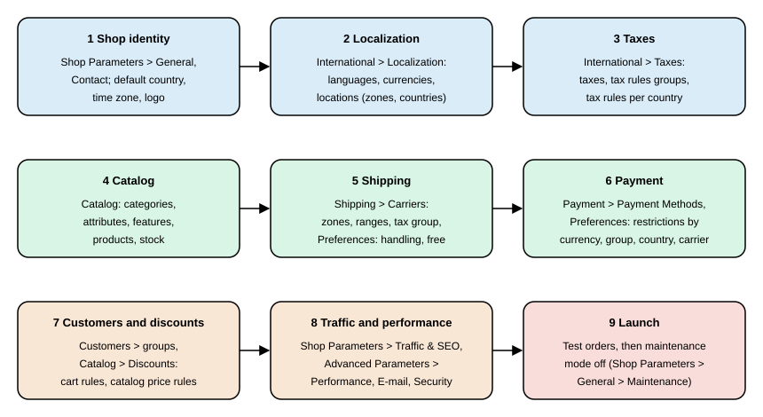

Back Office and Store Setup
|
This content was generated with the assistance of AI and should be verified against the official documentation before being relied on in production. |
The PrestaShop back office is where a merchant configures the shop, receives orders and serves customers, and almost every screen has a counterpart that a developer can drive from the console, the Admin API or a module. This page walks through a complete store setup in the order that respects the dependencies between screens: shop identity, localization, taxes, catalog, shipping, payment, customers and discounts, SEO and URLs, and the final switch from maintenance mode to live. It ends with a launch checklist. Each section explains the concept, the settings that matter, the configuration keys behind them, and the equivalent CLI or API operation.
The page was written against PrestaShop 9.2.0 (released 2026-09-30, Symfony 6.4.46, PHP 8.5.12 in the official Docker image, Hummingbird 2.1.2 as the default theme) and checked on 2026-10-27. The menu, the routes and the configuration keys shown below were read from a running 9.2.0 installation, and the Admin API and console examples were executed against it. The installation steps themselves are covered in Installation and Local Environments; this page starts from a fresh, empty shop.
The running example is Pocket Coffee, a small specialty-coffee shop. It sells "Single-origin beans" (three origins, three grinds, two sizes, 18 combinations) and a "Starter kit" at 24.00 EUR, in two categories (Beans and Equipment). It has a "Coffee Club" customer group with 10% off beans and free shipping above 40 EUR, ships to Spain for a flat 4.90 EUR and to the rest of the European Union for 9.90 EUR (parcels up to 5 kg), and runs a Spanish (default) and an English storefront with EUR and USD. Every example below builds one piece of that shop and uses only the reserved domain example.test and placeholder identifiers. The examples that create data used a throw-away local installation and removed what they created afterwards.
The back office at a glance
A back office lives in a folder with a random name: the installer renames admin to something like admin170xxxxxxxx
so that the login page cannot be guessed. Every Symfony page lives below that folder (for example
/<admin-folder>/improve/international/taxes/) and every URL carries a _token query parameter that protects against
cross-site request forgery. A link without a valid token shows an "Invalid token" page that offers the same link with a
correct token, so bookmarking a bare URL is harmless but never skips the check.
The menu has three groups, plus a "Home" entry added by the bundled Classic edition module. The table lists the entries
as stored in the ps_tab table of a 9.2.0 installation, with the route prefix of the pages that were migrated to
Symfony.
| Group | Entries (9.2.0) | Route prefix of the Symfony pages |
|---|---|---|
Sell |
Orders (Orders, Invoices, Credit Slips, Delivery Slips, Shopping Carts); Catalog (Products, Categories, Monitoring, Attributes and Features, Brands and Suppliers, Files, Discounts, Stock); Customers (Customers, Addresses); Customer Service (Customer Service, Order Messages, Merchandise Returns); Stats |
|
Improve |
Modules (Module Manager); Design (Theme and Logo, Email Theme, Pages, Positions, Image Settings); Shipping (Carriers, Preferences); Payment (Payment Methods, Preferences); International (Localization, Locations, Taxes, Translations); Marketing |
|
Configure |
Shop Parameters (General, Order Settings, Product Settings, Customer Settings, Contact, Traffic and SEO, Search); Advanced Parameters (Information, Performance, Administration, E-mail, Import, Team, Database, Logs, Webservice, Extra Properties, Admin API, New and Experimental Features, Security) |
|
Two facts explain why some screens look different from others. First, PrestaShop has been migrating legacy pages to
Symfony and Twig for years: from 9.0 the layout (header, side menu, toolbar) is rendered by Symfony for every page,
legacy or migrated, and a legacy page only keeps its own content in the old Smarty and HelperForm style. In 9.2.0 the
controllers/admin folder still contains 27 legacy admin controllers (the carrier wizard, groups, import, tabs and
shop URL pages among them) next to a few helper files. Second, several pages that were migrated in 9.0 and 9.1 are still behind feature flags, so
the same menu entry can open the old or the new page depending on the flag. The flags and their state on a fresh 9.2.0
install are listed by the console.
php bin/console prestashop:feature-flag listOn the checked installation, country, carrier, tax_rules_group, merchandise_return, tag, quick_access,
email_body_translation and hook_module_v2 were enabled (stable), and admin_api_multistore,
admin_api_experimental_endpoints, catalog_price_rule, permission, customer_threads, front_container_v2,
customer_group, store, improved_shipment, discount, improved_b2b and new_pricing were disabled (beta). The
architecture page explains the flag layers; for store setup the practical consequence is that Advanced Parameters >
Permissions, Shop Parameters > Customer Settings > Groups and Shop Parameters > Contact > Stores show their new page
only after the matching flag is enabled in Advanced Parameters > New and Experimental Features.
Setup order
The screens depend on each other, so the order in which a new shop is configured matters. A carrier needs zones and a tax rules group, a product needs a tax rules group and categories, a payment method needs currencies and countries, and a price shown to customers needs everything before it. The figure shows an order that never forces a second pass.

The sections below follow that order. Steps 1 to 3 are the foundation; changing the default country or currency after products and orders exist is possible but is the most error-prone change in a live shop.
Shop identity and general settings
Shop identity is spread over three screens. Shop Parameters > General holds the preferences (SSL, maintenance, the
shop-wide switches), Shop Parameters > Contact holds the contact details and the stores, and Improve > Design > Theme
and Logo holds the logo and favicon. The values live in the ps_configuration table (one row per key, and per shop
when multistore is on) and can be read and written from the console.
| Configuration key | Value on a fresh 9.2.0 install | Meaning |
|---|---|---|
|
|
Shop name used in the title of the pages, in e-mails and on invoices |
|
the administrator e-mail given at install time |
Sender address of transactional e-mails |
|
|
Default language of the front office and of new employees |
|
|
Default country, used for tax and address defaults |
|
|
Default currency; all prices are stored in it |
|
|
Time zone used for dates in the back office and in orders |
|
|
Generate HTTPS URLs; there is no |
|
|
Allow checkout without creating an account |
For Pocket Coffee the identity step sets the shop name, the shop e-mail on the example.test domain, the time zone
Europe/Madrid and Spain as the default country. The console reads and writes the same keys, which is the repeatable
way to apply them in a deployment script.
php bin/console prestashop:config get PS_SHOP_NAME
php bin/console prestashop:config set PS_SHOP_NAME --value="Pocket Coffee"
php bin/console prestashop:config set PS_TIMEZONE --value="Europe/Madrid"
php bin/console prestashop:config get PS_TIMEZONEprestashop:config takes the action (get, set or remove) and the key, plus --value for set, --lang for keys
that have one value per language, and --shopId or --shopGroupId to target one shop of a multistore. Without a shop
option it works on all shops. A get of an unknown key prints an error rather than an empty value, which is a quick way
to detect a typo in a key name. The command ran against the checked installation for reading (PS_SHOP_ENABLE=1,
PS_REWRITING_SETTINGS=1); values were not written on the shared test shop.
Maintenance mode
Maintenance mode (Shop Parameters > General > Maintenance, route /configure/shop/maintenance/) closes the front office
to visitors while the back office keeps working. It is the safe state for a shop that is being built, migrated or
upgraded. Four keys control it.
| Key | Default | Behaviour |
|---|---|---|
|
|
|
|
not set until saved |
Comma-separated IP addresses that still see the open shop, so that the team can test while everyone else sees the maintenance page |
|
|
Let a logged-in employee see the open shop regardless of the IP address |
|
empty |
Text of the maintenance page, one value per language |
The front controller answers a closed shop with HTTP status 503 and a Retry-After header of 3600 seconds, so that
search engines treat the closure as temporary, unless the visitor’s IP address is whitelisted or the visitor is a
logged-in employee. The switch was not toggled on the shared test installation, because it would have closed the front office
for the other work running on it; read the state with prestashop:config get PS_SHOP_ENABLE and toggle it in
deployment scripts with the matching set. Keep the shop closed with an IP whitelist during the whole build, and open it
only at the very end of the launch checklist.
Localization: languages, currencies and locations
International > Localization is the screen that imports a localization pack. A pack is an XML file in the localization/
folder of the installation (one per country, such as es.xml, de.xml or gb.xml, plus default.xml) that can install
a language, a currency, the taxes and tax rules of the country, measurement units and states in one step. The Spain pack
defines the euro, the Spanish language, the taxes IVA ES 21%, IVA ES 10% and IVA ES 4%, the tax rules groups
ES Standard rate (21%), ES Reduced Rate (10%), ES Super Reduced Rate (4%), ES Foodstuff Rate (4%) and
ES Books Rate (4%), plus a group EU VAT For Virtual Products generated from the EU tax data, metric units and the 52
Spanish provinces and autonomous cities. Importing it is the quickest way to get a plausible Spanish tax setup, and the same screen lets the merchant choose
which parts of a pack to import.
Languages
A language is installed from the language pack catalogue (Improve > International > Localization > Languages, route
/improve/international/languages/). Installing a language downloads translations for the back office, the front office
and the default modules, and registers the language in the ps_lang table with its locale (es-ES, en-US). Which
language is the default is the value of PS_LANG_DEFAULT; products, categories and CMS pages each carry one value per
active language, and the front office shows the language selector as soon as more than one language is active.
For Pocket Coffee, Spanish is installed and made the default language, English stays active, and every product title and description is entered in both. Install the languages before creating content, because the product form shows one tab per active language and a record created while a language is active is created with all its translations. The Admin API, for instance, copies the name given for the default language into the other active languages, as the tax example below shows, so a script that creates content never leaves a language empty by accident.
Currencies
Currencies live in Improve > International > Localization > Currencies (/improve/international/currencies/). Each has an
ISO code, a conversion rate against the default currency, a number of decimals and a format, and a state (active or not)
per shop. The default currency has rate 1.0 and prices are stored in it; other currencies are computed from it with the
conversion rate. On the checked installation EUR has rate 1.000000 and USD 1.117294.
The conversion rates are refreshed from the PrestaShop exchange-rate service by the back office button and by the
RefreshExchangeRatesCommand of the Currency domain, and can be overridden by hand with an "unofficial" currency whose
rate the merchant sets. Whether a currency is only displayed or also used for payment is decided on the payment side:
Improve > Payment > Preferences restricts each payment module to the currencies it accepts, which is what turns "display
USD" into "charge USD" for Pocket Coffee. A module that does not accept the customer’s currency simply does not show up
in checkout for that customer, which is the most common reason for a "no payment method available" report after adding a
currency.
Zones, countries and states
International > Locations holds three lists. A zone is a named group of countries (Europe, North America, Asia and so on in the default data); a country belongs to exactly one zone and carries its address format, its ISO code, its call prefix, whether it needs a state and whether it is active; a state is a subdivision of a country. Zones are what carriers and, indirectly, the tax rules attach to, so the zone of a country decides which carrier price list applies to it.
The default data defines eight zones (Europe, North America, Asia, Africa, Oceania, South America,
Europe (non-EU) and Central America/Antilla) and 241 countries, of which a fresh install activates only the install
country and a few more. The Admin API lists zones with GET /zones (scope zone_read).
TOKEN=$(curl -s -X POST https://shop.example.test/admin-api/access_token \
-d grant_type=client_credentials \
-d client_id=pocket-coffee-setup \
-d client_secret="${PS_API_CLIENT_SECRET}" \
-d scope=zone_read | jq -r .access_token)
curl -s -H "Authorization: Bearer ${TOKEN}" https://shop.example.test/admin-api/zonesThe response on the checked installation was a paginated object with totalItems, orderBy, limit and an items
array of { "zoneId": 1, "name": "Europe", "enabled": true } objects. Request the narrowest scope a script needs, and one token per resource when a script touches several.
The Pocket Coffee shipping rules need two zones, Spain and the rest of the European Union. The default Europe zone
contains both, so the shop either keeps one carrier price list per carrier with Spain handled by a separate carrier, or it
creates a dedicated Spain zone and moves the country ES into it (the countries page edits the zone of a country). The
examples below use the default Europe zone so that they do not depend on a custom zone. Creating a zone through the Admin API failed in the checked build:
POST /zones answered HTTP 500 because the command behind it requires a shop association that the resource did not
supply, so zones are created in the back office for now.
Taxes
PrestaShop separates three concepts that merchants often confuse. A tax is a named rate (IVA ES 21%, rate 21.0). A
tax rule maps a tax to a country (and optionally a state or a postcode range) with a behaviour for combining several
taxes. A tax rules group is a named set of tax rules, and it is the group, not the tax, that is attached to a product or
a carrier. Because a group holds one rule per country, a product with the group ES Reduced Rate (10%) is taxed at the
Spanish reduced rate in Spain and at the rate its rule defines for every other country that has a rule in the group.
Configuration lives in Improve > International > Taxes (/improve/international/taxes/) and Tax Rules
(/improve/international/tax_rules_groups/). The options form of the Taxes page (PS_TAX, PS_TAX_DISPLAY, PS_TAX_ADDRESS_TYPE, PS_USE_ECOTAX) and the rounding
options of Shop Parameters > General (PS_ROUND_TYPE, PS_PRICE_ROUND_MODE) are backed by these keys.
| Key | Value | Meaning |
|---|---|---|
|
|
Enable taxes; with |
|
|
Display the tax in the cart summary ( |
|
|
Which address decides the tax of an order: the delivery address or the invoice address |
|
|
Enable the eco-participation tax field of products |
|
|
Where rounding happens: |
|
|
Rounding mode: the constants |
The round type is a legal matter in some countries: the default of rounding per line reproduces what most invoices show, but a merchant that sells many cheap items may need the total-based mode to match an accounting package. Whatever the choice, changing it later changes the totals of new carts, not of existing orders.
The EU virtual-products group deserves a note. Since 2015 the VAT on digital services is due in the customer’s
country, and the localization packs contain automatically generated taxes (auto-generated="1",
from-eu-tax-group="virtual") for every EU country plus a group EU VAT For Virtual Products. The console command
prestashop:taxes:update-eu-tax-rule-groups regenerates those taxes and groups from the current EU rates, which is how a
shop that sells downloads keeps up when a member state changes its rate. Pocket Coffee sells physical goods only and does
not use it.
Creating taxes with the Admin API
The Admin API exposes taxes with the scopes tax_read and tax_write. A tax is created from a localized name, a rate
and an enabled flag. The following sequence ran against the checked installation: it created a throw-away tax, read it,
disabled it with a partial update and deleted it, and every call answered as shown.
TOKEN=$(curl -s -X POST https://shop.example.test/admin-api/access_token \
-d grant_type=client_credentials -d client_id=pocket-coffee-setup \
-d client_secret="${PS_API_CLIENT_SECRET}" -d scope=tax_write | jq -r .access_token)
# create: the names object needs at least the default language
curl -s -X POST https://shop.example.test/admin-api/taxes \
-H "Authorization: Bearer ${TOKEN}" -H "Content-Type: application/json" \
-d '{"names":{"1":"Spain super-reduced VAT 4%"},"rate":4.0,"enabled":true}'
# -> {"taxId":3}
# partial update uses merge-patch
curl -s -X PATCH https://shop.example.test/admin-api/taxes/3 \
-H "Authorization: Bearer ${TOKEN}" -H "Content-Type: application/merge-patch+json" \
-d '{"enabled":false}'
# -> {"taxId":3,"names":{"en-US":"...","es-ES":"..."},"rate":4.0,"enabled":false}
curl -s -X DELETE https://shop.example.test/admin-api/taxes/3 \
-H "Authorization: Bearer ${TOKEN}" -w '%{http_code}\n'
# -> 204Four details of that run are worth knowing. The names keys can be language ids ("1") or locales ("en-US"); a
request without a name in the default language is rejected with The field names is required at least in your default
language.; a name given only for the default language is copied into the other active languages, as the response
showed; and the rate is not range-checked by the resource, since a negative rate was accepted in the test run, so
validate rates in your own scripts. The Admin API needs HTTPS outside debug mode: the checked installation ran in
development mode with the force-secure option turned off so that plain HTTP worked, and a production shop answers
Use HTTPS protocol otherwise.
Catalog
Catalog setup in PrestaShop is a four-layer model, and understanding the layers prevents most data-modelling mistakes in a new shop.
-
Categories (Sell > Catalog > Categories) form a tree under the shop’s root category. A product has one default category and any number of other categories; the default decides the breadcrumb and the URL when category-based URLs are used.
-
Attributes and features (Sell > Catalog > Attributes and Features). An attribute group (origin, grind, size) holds attribute values (Ethiopia Yirgacheffe, whole bean, 250 g) and is used to build combinations, the purchasable variants of a product. A feature (roast level, altitude) holds descriptive values that customers can filter on but that do not create variants.
-
Products (Sell > Catalog > Products) of three kinds in the current product page: standard, virtual and pack. A standard product with attributes has combinations; each combination has its own reference (SKU), price impact, weight impact, stock and images.
-
Brands and suppliers (Sell > Catalog > Brands and Suppliers) record manufacturers and suppliers and are shown as filters and on product pages.
The product page that merchants see in 9.x is the new page introduced in 8.1; the legacy product page and 18 of its hooks (plus 7 login hooks that went away with the Symfony login) were removed in 9.0. A module or a script that still targets the legacy page breaks on 9.x, and the new page is extended through the product form hooks and the CQRS commands described in the developer pages.
Pocket Coffee in the catalog
The beans are one standard product with three attribute groups, which yields 3 × 3 × 2 = 18 combinations. The SKU
convention PC-<ORIGIN>-<GRIND>-<SIZE> (for example PC-ETH-WHL-250) is entered as the reference of each combination.
Prices are set in the product price field and as a price impact per combination: the base price is the 250 g price of
8.90 EUR, the 1 kg combinations carry the impact that brings the size to 29.90 EUR, and the Ethiopia origin carries a
price impact of 1.00 EUR per 250 g. Weight impacts (0.25 kg, 1 kg) matter because the carrier ranges below are by price, but the weight limit of
5 kg per parcel is enforced on weight. The Starter kit is a simple standard product at 24.00 EUR with one reference.
The tax rules group is chosen per product: in the example the beans carry the reduced Spanish group (10%) and the
Starter kit, which contains a grinder, the standard group (21%); these rates are example values, and the rates that apply
to a real shop are a question for its accountant. Stock is managed per combination (PS_STOCK_MANAGEMENT=1), and the key
PS_ORDER_OUT_OF_STOCK (default 0) decides whether an out-of-stock combination can still be ordered; the product
page lets each product override the shop default. The "origin" attribute is made filterable by the faceted search module
(ps_facetedsearch, version 5.1.0 in 9.2.0), which builds filter blocks from attributes, features, price, availability
and categories. After bulk changes to the catalog the search index is rebuilt from the console.
php bin/console prestashop:search:index --full
php bin/console prestashop:thumbnails:regenerate --helpprestashop:search:index indexes products for the search engine (options --full, --shop-id, --shop-group-id and
--product-id), and prestashop:thumbnails:regenerate rebuilds product and category images when an image type changes
in Improve > Design > Image Settings. Large catalogs are usually loaded with Advanced Parameters > Import (CSV) or with
the Admin API product endpoints; the Admin API page covers the latter.
Shipping: carriers
A carrier (Improve > Shipping > Carriers, route /improve/shipping/carriers/) is a delivery option that the customer
chooses in checkout. It combines a delivery area, a pricing method and a handful of limits. The migrated carrier list
is controlled by the carrier feature flag, which is enabled in 9.2.0; the legacy carrier wizard controller is still
present in 9.2.0, so the create and edit steps may still open it.
| Carrier property | Behaviour |
|---|---|
Name, transit time, grade |
Shown to the customer; the grade (0 to 9) states the delivery speed, from slowest to fastest |
Tracking URL |
URL with |
Shipping method |
Billing by total weight ( |
Zones and ranges |
A carrier is available in the zones ticked for it, and each zone has a price per range of weight or price (from inclusive, to exclusive) |
Out-of-range behaviour |
If the cart is outside every range: apply the highest range ( |
Handling and free shipping |
Whether the handling charge ( |
Size and weight limits |
Maximum width, height, depth and weight; a cart that exceeds them cannot use the carrier |
Groups and shops |
Customer groups that may use the carrier, and the shops it belongs to |
Tax rules group |
The group that taxes the shipping fee |
Shop-wide shipping behaviour is in Improve > Shipping > Preferences, backed by the keys PS_SHIPPING_HANDLING (the handling
fee amount, 2 in the checked install), PS_SHIPPING_FREE_PRICE and PS_SHIPPING_FREE_WEIGHT (a cart over this total or
weight ships free; 0 disables the rule), PS_SHIPPING_METHOD (the default billing method) and PS_CARRIER_DEFAULT
(the default carrier). Two behaviours trip up new merchants. A carrier with no range for a zone is not offered in that
zone, and a product can be restricted to specific carriers in its Shipping tab, which silently hides every other carrier
for any cart containing it.
A Pocket Coffee carrier through the Admin API
The Admin API creates carriers (POST /carriers), sets the price ranges (PATCH /carriers/{carrierId}/ranges) and sets
the tax rules group of the shipping fee (PATCH /carriers/{carrierId}/set-tax-rule-group). The sequence below creates
the Spanish flat-rate carrier: billing by price, 4.90 EUR up to a cart total of 40, free from 40 up, a 5 kg weight limit,
in the Europe zone, for all three default customer groups. It ran against the checked installation; the carrier was
removed afterwards with the soft delete that PrestaShop itself uses (the deleted flag of the ps_carrier row), because
the Admin API has no carrier delete operation.
# scopes: carrier_write to change, carrier_read to read back
curl -s -X POST https://shop.example.test/admin-api/carriers \
-H "Authorization: Bearer ${TOKEN}" -H "Content-Type: application/json" \
-d '{
"name": "Pocket Coffee Spain flat",
"delays": {"1": "2-3 days in Spain"},
"grade": 5,
"trackingUrl": "https://tracking.example.test/@",
"enabled": true,
"maxWeight": 5,
"associatedGroupIds": [1, 2, 3],
"shippingMethod": 2,
"rangeBehavior": 0,
"zones": [1],
"associatedShopIds": [1]
}'
# -> {"carrierId":5, ... "shippingMethod":2, "rangeBehavior":0, "zones":[1], ...}
curl -s -X PATCH https://shop.example.test/admin-api/carriers/5/ranges \
-H "Authorization: Bearer ${TOKEN}" -H "Content-Type: application/merge-patch+json" \
-d '{"ranges":[
{"zoneId":1,"rangeFrom":0,"rangeTo":40,"rangePrice":4.90},
{"zoneId":1,"rangeFrom":40,"rangeTo":10000,"rangePrice":0}
]}'
curl -s -X PATCH https://shop.example.test/admin-api/carriers/5/set-tax-rule-group \
-H "Authorization: Bearer ${TOKEN}" -H "Content-Type: application/merge-patch+json" \
-d '{"taxRuleGroupId":2}'The create call returned the new carrier with the delays copied into every active language and the position
appended after the existing carriers. The ranges call echoed the two ranges (with the price 4.9 serialized as
4.9000000000000004, a float artefact to keep in mind when comparing values in a script), and the third call returned
the carrier with taxRuleGroupId set. The create operation needs at least one customer group, one zone and one shop; the
body accepts multipart form data as well, which is how a carrier logo (a JPEG up to 8 MB) is uploaded in the same request.
The "free from 40 EUR" rule can be modelled in two ways. The ranges above price the second range at zero, which makes the
rule part of the carrier; the alternative is the shop-wide PS_SHIPPING_FREE_PRICE, which applies to every carrier and
therefore also removes the 9.90 EUR European fee, so it does not match Pocket Coffee, where the EU rate stays flat. The
Coffee Club promise (free shipping above 40 EUR for members) is a cart rule with a free-shipping action restricted to the
customer group, described in the next sections.
Payment
Payment methods are modules. Improve > Payment > Payment Methods lists the installed payment modules and Improve >
Payment > Preferences (/improve/payment/preferences) holds the restrictions that decide who sees which method. A 9.2.0
installation bundles ps_wirepayment (bank transfer), ps_checkpayment (payment by check), ps_cashondelivery and
ps_checkout (card and wallet payments through a hosted provider). The preferences screen has four restriction grids, one
per dimension: currency, group, country and carrier. Each grid is a matrix of checkboxes, and a module is offered in
checkout only if the current cart’s currency, the customer’s group, the delivery country and the chosen carrier are all
ticked for it. The data is stored in the ps_module_currency, ps_module_group, ps_module_country and
ps_module_carrier tables, which is also where a module can be checked when it vanishes from checkout.
For Pocket Coffee the bank transfer and the card module are ticked for both EUR and USD, for all three default groups
and for Spain and the other EU countries; cash on delivery stays unchecked everywhere because a coffee shop has no use for
it. The restrictions are per shop, so a multistore keeps one matrix per shop. The developer view of the same machinery,
PaymentModule and PaymentOption, is in the payment and carrier modules page.
The last payment setting that new merchants miss is the order status each method creates. Shop Parameters > Order
Settings > Statuses (route /configure/shop/order-states/) holds the 18 default statuses of 9.2.0 (from "Awaiting
check payment" and "Payment accepted" to "Partial payment", "Authorized. To be captured by merchant" and "Authorization
voided"), and a payment module picks one of them when it creates an order. Renaming a status is harmless; deleting one
that a module references breaks that module’s order creation.
Customers, groups and discounts
Customers have a group (default groups: Visitor, Guest and Customer, ids 1 to 3), and the group is the lever for
group-specific pricing and rules. A group carries a percentage reduction on all prices, a price display mode (tax
included or excluded) and per-category reductions, and it can be used as a condition of a cart rule. Customer groups
(Shop Parameters > Customer Settings > Groups) are on the new Symfony page only when the customer_group flag is
enabled.
The "Coffee Club" group of Pocket Coffee is created in the back office and members are assigned to it from the customer
form (Ada, ada@example.test, is a member; Grace, grace@example.test, checks out as a guest). The 10% discount on
beans is better expressed as a cart rule than as a group reduction, because a group reduction would also apply to the
equipment. A cart rule is created in Sell > Catalog > Discounts (route /sell/catalog/discounts/) with conditions
(group, category, minimum amount, validity period), actions (percentage or amount reduction, free shipping, gift) and
options (priority, cumulability with other rules, whether a code is required). The discount system was rewritten in 9.x
behind the discount flag (disabled by default in 9.2.0), so the classical cart rule form shown by default is the one a
production shop uses today. Cart rule mechanics, the new discount system and the interplay with specific prices are in the
catalog and pricing page.
The two Pocket Coffee rules are therefore: "Coffee Club beans -10%" (condition: group Coffee Club; restriction: category Beans; action: 10% on the selected products; no code) and "Coffee Club free shipping" (condition: group Coffee Club and a minimum amount of 40; action: free shipping).
Employees, profiles and permissions
Back-office accounts are employees, and what they can do is decided by their profile. A fresh installation has four
profiles (SuperAdmin, Logistician, Translator and Salesman), and an employee has exactly one. Employees and profiles live
under Advanced Parameters > Team (/configure/advanced/employees/ and /configure/advanced/profiles/). A profile
carries two kinds of rights, both stored as links between the profile and authorization roles (tables ps_access for
the tabs and ps_module_access for the modules, with the roles in ps_authorization_role): the tab permissions, a
read, create, update and delete grant per menu entry (for example ROLE_MOD_TAB_ADMINTAXES_READ), and the module
permissions, the same four grants per module (for example ROLE_MOD_MODULE_PS_CHECKPAYMENT_UPDATE). The SuperAdmin
profile bypasses the checks.
Permissions are enforced by the Symfony security attributes on controllers (#[AdminSecurity]) and by the legacy tab
check on legacy controllers, so a new custom page needs a tab entry and a security attribute to be protected at all; the
CLI linter prestashop:linter:security-attribute find-missing lists routes without the attribute. The new permissions
page (Advanced Parameters > Permissions, /configure/advanced/permissions/) is behind the permission flag.
The console can create a SuperAdmin and reset a password, which is the recovery path when nobody can log in. The first
command ran against the checked installation (the resulting employee was deleted afterwards); the second works the same way
and prompts for the password when --password is omitted.
php bin/console prestashop:employee:create-admin support@example.test \
--first-name=Ada --last-name=Support --no-interaction --password="<a-strong-password>"
# [OK] SuperAdmin employee #2 (support@example.test) created with full back-office access.
php bin/console prestashop:employee:change-password support@example.testThe CLI intentionally exposes only e-mail, first name, last name and password, always creates a SuperAdmin on the default
language, associated with every shop, and warns that the account has full privileges. Prefer the interactive prompt over
--password so that the password does not end in the shell history, and create restricted employees on the Team page.
Passwords are scored with the zxcvbn estimator (policy introduced in 8.0.x), and since 9.0 the login is handled by the
Symfony security system, which provides authentication events that a module can subscribe to.
SEO and URLs
Search-engine settings are under Shop Parameters > Traffic and SEO (route /configure/shop/seo-urls/), which is one page
with several forms: the list of pages with their meta titles and URL aliases, "Set up URLs", "Shop URL", "URL
schema" and "SEO options", plus the robots.txt generator. The page is a good example of why the keys matter more than the
screen, because the same switches decide whether links work at all.
| Key | Value | Meaning |
|---|---|---|
|
|
Friendly URLs; needs |
|
|
Redirect a non-canonical URL to the canonical one: |
|
unset |
Keep accented characters in URL slugs instead of transliterating them |
|
|
Separator between attribute values in the combination anchor of a product URL |
|
|
Show out-of-stock combinations in the product page selector |
The URL schema (the PS_ROUTE_* keys, shown in the form as route patterns made of placeholders such as the id, the
rewrite and the category) lets a shop choose between a product URL that includes its category and one that does not; avoid changing it on a
live shop without a redirect plan, since every indexed URL changes. The .htaccess that implements friendly URLs is generated
by the back office when the SEO settings are saved and by the console.
php bin/console prestashop:htaccess:generate
php bin/console prestashop:htaccess:generate --forceWithout --force the command does not overwrite an existing file. Nginx installations do not use .htaccess: the same
rewrite rules have to be written into the server block, which the installation page covers. A robots.txt is generated
from the same page (the "Generate robots.txt file" button posts to /configure/shop/seo-urls/generate/robots), and
a sitemap is produced by the gsitemap module, which is bundled but must be configured with the shop URL and the
languages. Meta titles, descriptions and the URL alias of each page are edited per language, so a Spanish and an English
storefront need both versions filled.
The "Shop URL" form changes the domain and the physical and virtual URI of the shop (stored in the ps_shop_url table).
It is the form to use after moving to a new domain, together with a search-and-replace of absolute URLs in CMS content;
the installation page describes the move.
Order confirmations, shipping notifications and password resets are sent through the mail settings in Advanced
Parameters > E-mail (/configure/advanced/emails/), which also lists every e-mail sent and lets the merchant test the
configuration. The keys are PS_MAIL_METHOD (1 native mail, 2 SMTP, 3 disabled; the checked install showed 1, with an SMTP
placeholder in PS_MAIL_SERVER), PS_MAIL_SERVER, PS_MAIL_SMTP_PORT and
PS_MAIL_SMTP_ENCRYPTION. Since 9.0 mail is sent through Symfony Mailer, so the encryption choices are TLS or none; the
old SSL option was dropped. A production shop should use an SMTP relay or an e-mail service, with SPF, DKIM and DMARC
records on the sending domain, and should send one real order confirmation to an external mailbox before launch.
Performance and security settings before launch
Two pages decide whether the shop survives its first traffic and its first scan. Advanced Parameters > Performance
(/configure/advanced/performance/) switches debug mode off, selects the Smarty cache behaviour and the CCC (combine,
compress, cache) options for CSS and JavaScript, and chooses the cache backend. Advanced Parameters > Security
(/configure/advanced/security/) holds the account-protection options of the back office.
Both are covered in detail in the performance and security pages; the minimum for launch is to run in production mode
(not debug), confirm that the front office is served over HTTPS with PS_SSL_ENABLED=1, and make sure the installer
leftovers are gone (9.2 removes the install folder automatically after the installation succeeds).
Launch checklist
The checklist is ordered so that the steps that are hard to undo come last.
| Step | Check | Where |
|---|---|---|
1 |
Shop name, e-mail, logo, time zone, default country, default language and default currency are final |
Shop Parameters > General, Contact; Improve > Design > Theme and Logo |
2 |
Languages installed and every product, category and CMS page translated; the localization pack for each target country imported |
Improve > International > Localization |
3 |
Taxes and tax rules groups match the accountant’s rates; a test cart for each country shows the expected tax |
Improve > International > Taxes, Tax Rules |
4 |
Every product has a category, a tax rules group, a reference, a price, stock and images in the thumbnail sizes the theme uses; the search index is rebuilt |
Sell > Catalog; |
5 |
Every carrier has ranges for each zone; a test cart over and under the free threshold and over the weight limit shows the right carriers |
Improve > Shipping > Carriers, Preferences |
6 |
Payment modules are in live mode, each restricted to the right currencies, groups, countries and carriers; one real test payment and refund done |
Improve > Payment |
7 |
Legal pages (terms, privacy, cookies, legal notice) exist in every language; the terms checkbox is on ( |
Improve > Design > Pages; Shop Parameters > Order Settings |
8 |
Friendly URLs on, |
Shop Parameters > Traffic and SEO |
9 |
E-mail sends from a real domain with SPF, DKIM and DMARC; order, shipping and password e-mails received externally |
Advanced Parameters > E-mail |
10 |
Production mode: debug off, cache and CCC on, OPcache on, HTTPS forced, default admin folder renamed (automatic), demo data and demo accounts removed, unused modules uninstalled |
Advanced Parameters > Performance, Security; Improve > Modules |
11 |
Employees reviewed: one SuperAdmin per owner, restricted profiles for staff, no shared accounts |
Advanced Parameters > Team |
12 |
Backups scheduled and a restore tested; the update path for the next patch release is known |
Hosting; Update Assistant |
13 |
Open the shop: |
Shop Parameters > General > Maintenance |
Legacy guidance from older books
Several books on PrestaShop are still read today, and their setup chapters describe an interface that no longer exists. PrestaShop 1.5 Beginner’s Guide (2013) and PrestaShop 1.3 Theming Beginner’s Guide (2010) describe 1.3 and 1.5 back offices, FTP uploads of the installer, the Google Checkout module (discontinued years ago) and a flat menu that was replaced in 1.7 by the Sell, Improve, Configure structure shown above. PrestaShop Recipes (2017) covers 1.6, which means core overrides for most customization, a different tab structure and XAMPP-based local setups, and no Symfony, Twig, CQRS or Admin API. The concepts survive (zones, carriers with ranges, tax rules groups, cart rules, profiles), but the screens, the URLs, the hook names and the file layout do not, and several recipes rely on overrides that current guidance discourages. Use the books for the vocabulary and the business reasoning, and this page and the official developer documentation for the steps.
Pocket Coffee thread
By the end of this page Pocket Coffee has its identity (name, e-mail, Madrid time zone), Spanish as the default language with English active, EUR as the default currency with USD as a second one, the Spanish localization pack with the 21%, 10% and 4% taxes, a catalog skeleton (categories Beans and Equipment, the origin, grind and size attribute groups, 18 combinations of the beans and the Starter kit), a Spanish flat-rate carrier and a European one, bank transfer and card payments, the Coffee Club group and its two cart rules, and a closed shop awaiting launch. The pages that follow build the behaviour on top: the module that shows the roast date, the hooks that react to orders, the checkout and payment details, the theme and the APIs.
References
-
PrestaShop core repository (localization packs, controllers and routes)
-
Arnaldo Pérez Castaño, PrestaShop Recipes, Apress, 2017 (PrestaShop 1.6; read as legacy guidance)
-
John Horton and Jose A. Tizon, PrestaShop 1.5 Beginner’s Guide, Packt, 2013 (read as legacy guidance)